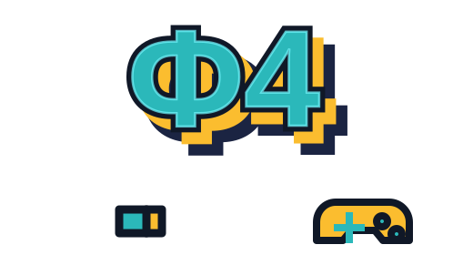

Игровые ряды без хаоса
Рабочие станции собраны в понятную планировку: проходы не забиты, посадка читается с первого взгляда, а подвесные полки для системных блоков освобождают стол и визуально усиливают клубный стиль.

Пушкино · ул. Тургенева, 1
Ф4 - компьютерный клуб нового формата: киберспортивная энергия, темный технологичный интерьер, удобные игровые места, lounge-зона и атмосфера, в которой хочется собраться командой и остаться еще на один матч.
Кто мы
По брендбуку Ф4 - не просто место для игр, а центр притяжения для тех, кто одинаково любит командные победы, киберспорт и ламповые вечера с друзьями. В Пушкино эта идея раскрыта через темный интерьер, пиксельные логотипы, графитовые материалы, точечный свет и яркие бирюзово-желтые акценты.
Почему сюда хочется возвращаться
Рабочие станции собраны в понятную планировку: проходы не забиты, посадка читается с первого взгляда, а подвесные полки для системных блоков освобождают стол и визуально усиливают клубный стиль.
Черный сатин, темный цементный пол, бирюзовая подсветка, желтые пиксельные акценты и крупные знаки Ф4 работают как единая сцена. Это не “комната с компьютерами”, а узнаваемый клуб.
Lounge с диванами, креслами, ТВ и консольным настроением дает нормальный сценарий для друзей: подождать команду, отдохнуть между матчами, посмотреть игру или просто зависнуть в атмосфере.
Админ-зона сделана яркой и понятной: светящаяся стойка, фирменный знак, холодильник с напитками, навигационный свет и быстрый визуальный контакт с гостем с первых секунд.
В проект заложены электроснабжение, вентиляция, освещение и слаботочные сети. Это база для стабильной работы оборудования, комфортного воздуха и уверенного вечернего потока гостей.
Ведомость фиксирует покрытия, краски, трековый свет, мебель, розетки и сантехнику. Значит, будущий клуб не держится на одной красивой картинке: у него есть рабочая проектная основа.

Главная арена
Длинные игровые ряды, широкие столешницы, подсветка рабочей зоны, темные кресла и мониторы в одной линии создают правильный фокус: игрок видит экран, команда рядом, лишнее не отвлекает.

Мягкая зона для компании, ожидания, турниров на большом экране и перерыва между катками.

Фирменные знаки на стенах ведут гостя по клубу, а темный коридор работает как переход в игровой режим.
Планировка
Интерьер
Фирменный стиль
Бирюзовый отвечает за энергию экрана и подсветки, желтый - за пиксельный игровой акцент, темно-синий и черный собирают сцену в плотный киберспортивный фон.
Готов к катке?
Бронь, турниры, дни рождения и командные тренировки оформляются на отдельной странице. Здесь оставляем яркий вход в сценарий, а все детали и подтверждение пользователь завершает уже на стороне сервиса.
Откроется внешний сайт бронирования, где можно выбрать формат визита и завершить оформление.
Оформить бронь